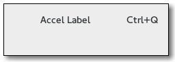

Gtk.AccelLabel
Example
Methods
| Inherited: | Gtk.Label (46), Gtk.Misc (4), Gtk.Widget (256), GObject.Object (33), Gtk.Buildable (10) |
|---|
| static | new(string) |
| get_accel() | |
| get_accel_widget() | |
| get_accel_width() | |
| refetch() | |
| set_accel(accelerator_key, accelerator_mods) | |
| set_accel_closure(accel_closure) | |
| set_accel_widget(accel_widget) |
Virtual Methods
| Inherited: | Gtk.Label (4), Gtk.Widget (82), GObject.Object (7), Gtk.Buildable (10) |
|---|
Properties
| Inherited: | Gtk.Label (20), Gtk.Misc (4), Gtk.Widget (38) |
|---|
| Name | Type | Flags | Short Description |
|---|---|---|---|
| accel-closure | GObject.Closure | r/w | The closure to be monitored for accelerator changes |
| accel-widget | Gtk.Widget | r/w | The widget to be monitored for accelerator changes |
Style Properties
| Inherited: | Gtk.Widget (17) |
|---|
Signals
| Inherited: | Gtk.Label (5), Gtk.Widget (69), GObject.Object (1) |
|---|
Fields
| Inherited: | Gtk.Label (1), Gtk.Misc (1), Gtk.Widget (1), GObject.InitiallyUnowned (3), GObject.Object (3) |
|---|
| Name | Type | Access | Description |
|---|---|---|---|
| label | Gtk.Label | r |
Class Details
- class Gtk.AccelLabel(label=None, **kwds)
Bases: Gtk.Label
The Gtk.AccelLabel widget is a subclass of Gtk.Label that also displays an accelerator key on the right of the label text, e.g. “Ctl+S”. It is commonly used in menus to show the keyboard short-cuts for commands.
The accelerator key to display is not set explicitly. Instead, the Gtk.AccelLabel displays the accelerators which have been added to a particular widget. This widget is set by calling Gtk.AccelLabel.set_accel_widget ().
For example, a Gtk.MenuItem widget may have an accelerator added to emit the “activate” signal when the “Ctl+S” key combination is pressed. A Gtk.AccelLabel is created and added to the Gtk.MenuItem, and Gtk.AccelLabel.set_accel_widget () is called with the Gtk.MenuItem as the second argument. The Gtk.AccelLabel will now display “Ctl+S” after its label.
Note that creating a Gtk.MenuItem with Gtk.MenuItem.new_with_label () (or one of the similar functions for Gtk.CheckMenuItem and Gtk.RadioMenuItem ) automatically adds a Gtk.AccelLabel to the Gtk.MenuItem and calls Gtk.AccelLabel.set_accel_widget () to set it up for you.
A Gtk.AccelLabel will only display accelerators which have Gtk.AccelFlags.VISIBLE set (see Gtk.AccelFlags ). A Gtk.AccelLabel can display multiple accelerators and even signal names, though it is almost always used to display just one accelerator key.
## Creating a simple menu item with an accelerator key.
<!-- language="C" --> GtkWidget *save_item; GtkAccelGroup *accel_group; // Create a GtkAccelGroup and add it to the window. accel_group = gtk_accel_group_new (); gtk_window_add_accel_group (GTK_WINDOW (window), accel_group); // Create the menu item using the convenience function. save_item = gtk_menu_item_new_with_label ("Save"); gtk_widget_show (save_item); gtk_container_add (GTK_CONTAINER (menu), save_item); // Now add the accelerator to the GtkMenuItem. Note that since we // called gtk_menu_item_new_with_label() to create the GtkMenuItem // the GtkAccelLabel is automatically set up to display the // GtkMenuItem accelerators. We just need to make sure we use // GTK_ACCEL_VISIBLE here. gtk_widget_add_accelerator (save_item, "activate", accel_group, GDK_KEY_s, GDK_CONTROL_MASK, GTK_ACCEL_VISIBLE);
- static new(string)
Parameters: string (str) – the label string. Must be non-None. Returns: a new Gtk.AccelLabel. Return type: Gtk.Widget Creates a new Gtk.AccelLabel.
- get_accel()
Returns: accelerator_key: return location for the keyval accelerator_mods: return location for the modifier mask Return type: (accelerator_key: int, accelerator_mods: Gdk.ModifierType) Gets the keyval and modifier mask set with Gtk.AccelLabel.set_accel ().
New in version 3.12.
- get_accel_widget()
Returns: the object monitored by the accelerator label, or None. Return type: Gtk.Widget Fetches the widget monitored by this accelerator label. See Gtk.AccelLabel.set_accel_widget ().
- get_accel_width()
Returns: the width needed to display the accelerator key(s). Return type: int Returns the width needed to display the accelerator key(s). This is used by menus to align all of the Gtk.MenuItem widgets, and shouldn’t be needed by applications.
- refetch()
Returns: always returns False. Return type: bool Recreates the string representing the accelerator keys. This should not be needed since the string is automatically updated whenever accelerators are added or removed from the associated widget.
- set_accel(accelerator_key, accelerator_mods)
Parameters: - accelerator_key (int) – a keyval, or 0
- accelerator_mods (Gdk.ModifierType) – the modifier mask for the accel
Manually sets a keyval and modifier mask as the accelerator rendered by accel_label.
If a keyval and modifier are explicitly set then these values are used regardless of any associated accel closure or widget.
Providing an accelerator_key of 0 removes the manual setting.
New in version 3.6.
- set_accel_closure(accel_closure)
Parameters: accel_closure (GObject.Closure) – the closure to monitor for accelerator changes. Sets the closure to be monitored by this accelerator label. The closure must be connected to an accelerator group; see Gtk.AccelGroup.connect ().
- set_accel_widget(accel_widget)
Parameters: accel_widget (Gtk.Widget) – the widget to be monitored. Sets the widget to be monitored by this accelerator label.
Property Details
- Gtk.AccelLabel.props.accel_closure
Name: accel-closure Type: GObject.Closure Default Value: None Flags: r/w The closure to be monitored for accelerator changes
- Gtk.AccelLabel.props.accel_widget
Name: accel-widget Type: Gtk.Widget Default Value: None Flags: r/w The widget to be monitored for accelerator changes